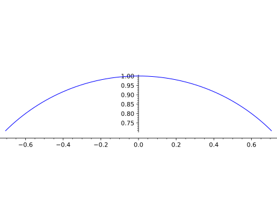
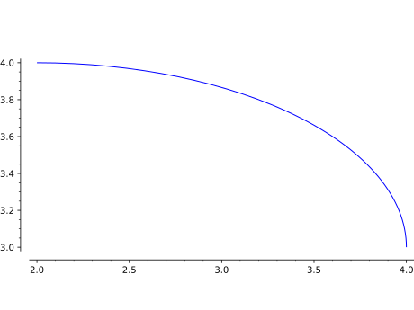
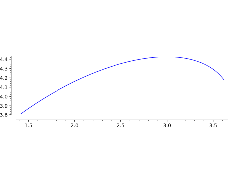

Primitive class for the Arc graphics type. See arc? for information
about actually plotting an arc of a circle or an ellipse.
INPUT:
x,y - coordinates of the center of the arc
r1, r2 - lengths of the two radii
angle - angle of the horizontal with width
sector - sector of angle
options - dict of valid plot options to pass to constructor
EXAMPLES:
Note that the construction should be done using arc:
sage: fromsage.plot.arcimportArcsage: print(Arc(0,0,1,1,pi/4,pi/4,pi/2,{}))Arc with center (0.0,0.0) radii (1.0,1.0) angle 0.78539816339... inside the sector (0.78539816339...,1.5707963267...)
An arc (that is a portion of a circle or an ellipse)
Type arc.options to see all options.
INPUT:
center - 2-tuple of real numbers - position of the center.
r1, r2 - positive real numbers - radii of the ellipse. If only r1
is set, then the two radii are supposed to be equal and this function returns
an arc of circle.
angle - real number - angle between the horizontal and the axis that
corresponds to r1.
sector - 2-tuple (default: (0,2*pi))- angles sector in which the arc will
be drawn.
OPTIONS:
alpha - float (default: 1) - transparency
thickness - float (default: 1) - thickness of the arc
color, rgbcolor - string or 2-tuple (default: ‘blue’) - the color
of the arc
linestyle - string (default: 'solid') - The style of the line,
which is one of 'dashed', 'dotted', 'solid', 'dashdot',
or '--', ':', '-', '-.', respectively.
EXAMPLES:
Plot an arc of circle centered at (0,0) with radius 1 in the sector
\((\pi/4,3*\pi/4)\):
sage: arc((0,0),1,sector=(pi/4,3*pi/4))Graphics object consisting of 1 graphics primitive

Plot an arc of an ellipse between the angles 0 and \(\pi/2\):
sage: arc((2,3),2,1,sector=(0,pi/2))Graphics object consisting of 1 graphics primitive

Plot an arc of a rotated ellipse between the angles 0 and \(\pi/2\):
sage: arc((2,3),2,1,angle=pi/5,sector=(0,pi/2))Graphics object consisting of 1 graphics primitive

Plot an arc of an ellipse in red with a dashed linestyle:
sage: arc((0,0),2,1,0,(0,pi/2),linestyle="dashed",color="red")Graphics object consisting of 1 graphics primitivesage: arc((0,0),2,1,0,(0,pi/2),linestyle="--",color="red")Graphics object consisting of 1 graphics primitive